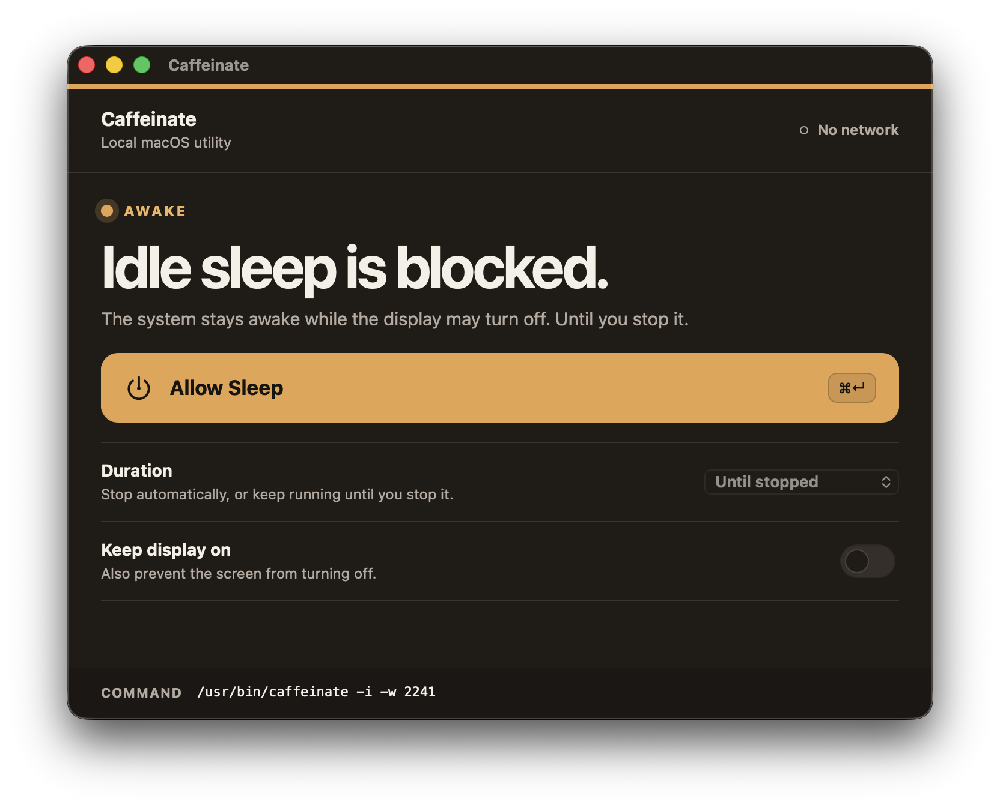
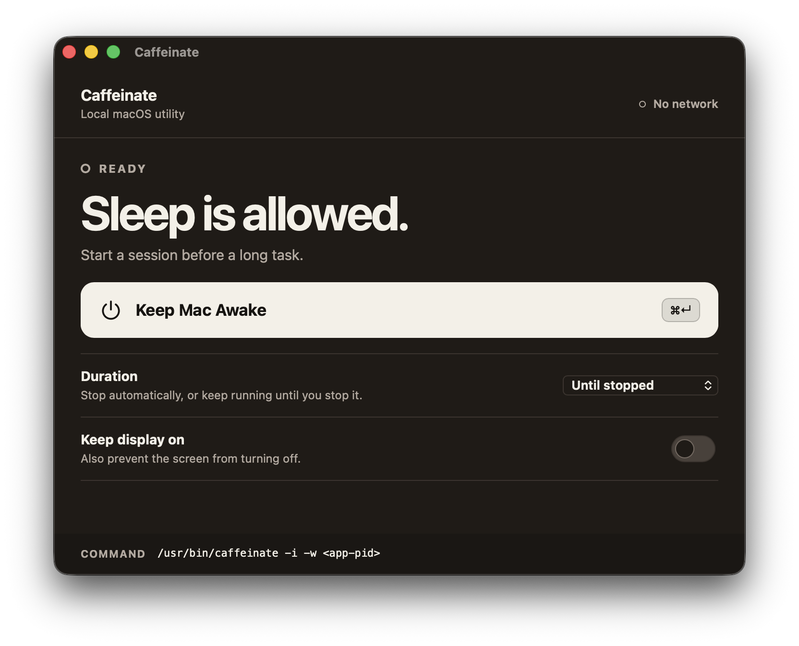

01
One clear switch
Start or stop the awake session from a single primary control. Use ⌘↵ when your hands are already on the keyboard.
macOS utility
Caffeinate keeps long builds, downloads, renders, uploads, and remote sessions running without changing your permanent power settings.
Version 1.0.0 macOS 12 or later

Local onlyNo account or telemetry
Built on macOSUses the system caffeinate utility
Clear lifecycleStop it or close the app
Normal windowNo menu-bar clutter
Two states. No guessing.
The interface gives you one unmistakable action and the exact system command behind it.

Designed to disappear
A small utility should not become another system to manage.
01
Start or stop the awake session from a single primary control. Use ⌘↵ when your hands are already on the keyboard.
02
Run until stopped or choose 30 minutes, 1 hour, 2 hours, or 4 hours. The app reports the remaining state without hiding it in a menu.
03
Idle system sleep is blocked by default. Keeping the display on is a separate choice, so the safe setting remains the easy setting.
04
Caffeinate manages a built-in macOS command locally. There is no account, telemetry, cloud service, or hidden background session after the app exits.
Native truth
Caffeinate owns a fixed `/usr/bin/caffeinate` process and ties it to the application lifecycle. Close the app and the assertion ends.
$ /usr/bin/caffeinate -i -w <app-pid>Install Caffeinate
The DMG route is ready. Homebrew support will activate when the cask is published.
Direct download
AvailableHomebrew Cask
Publishing in progressThe command is prepared, but the cask is not published yet. This method will enable automatically when the site configuration is updated.
brew install --cask caffeinate
Before you install
No. Closing the application releases its sleep assertion. It does not leave a hidden background process running by design.
Yes. “Keep display on” is an optional setting. The default session blocks idle system sleep while still allowing the display to turn off.
No. Caffeinate does not override macOS lid-close behavior.
No. The application is designed to work locally without accounts, telemetry, or network requests.